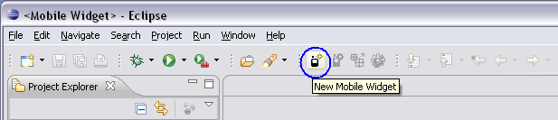
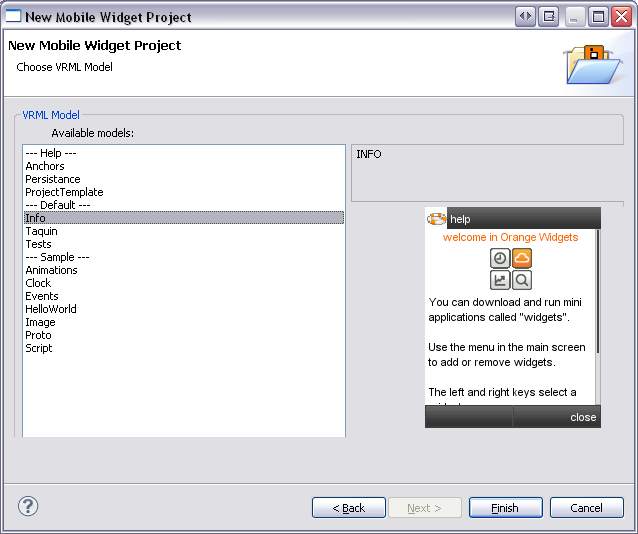
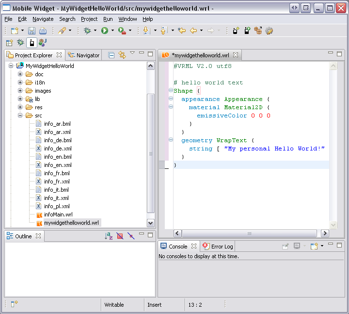
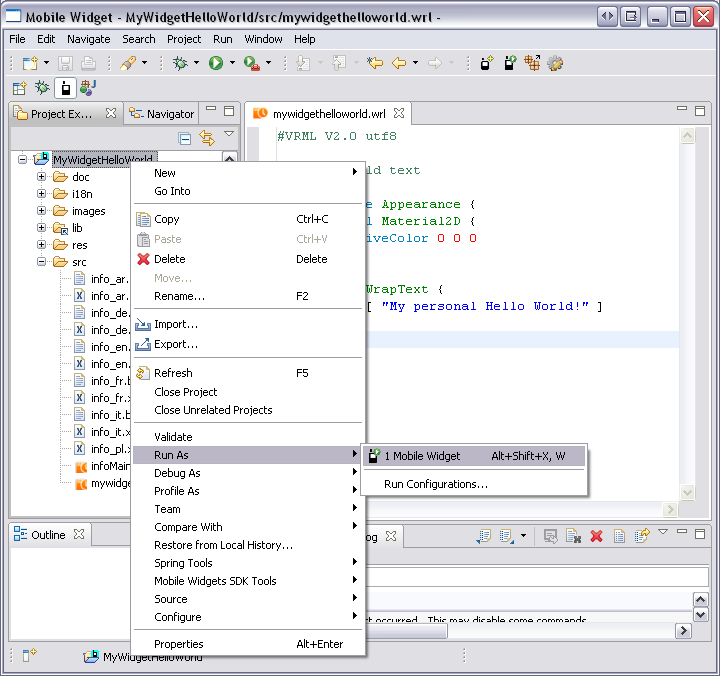
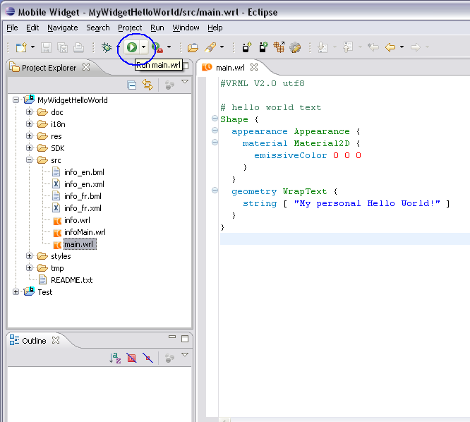

We start with a very simply project: the " Hello world! " project.
" Hello world! " project displays " My personnal Hello world! " message.
From eclipse folder, launch " eclipse.exe " file to open Eclipse.

To create a new project on Eclipse, click on the " New Mobile Widget " icon on the Toolbar (marked in blue).
" New Mobile Widget Project - Create a new Mobile Widget Project " dialog box is opened.
Complete all textfields for new Mobile Widget project by:

" New Mobile Widget Project - Choose VRML Model " dialog box is opened.
Select an " available models " for the " VRML Model ". A picture shows the Model. (Here for example " Info ").
Select " Next > " button to continue.
" New Mobile Widget Project - Configure widget style " dialog box is opened.
Select a " Widget Style: " for the " Style ". A picture shows the Model. (Here for example " OWP ").
Select " Next > " button to continue.
" Open Associated Perspective? " pop up is opened only the first time.
Select " Yes " button to continue.
Congratulations! Your project " MyWidgetHelloWord " is created.
Open " main.wrl " file (in " src " folder under " MyWidgetHelloWorld " folder).
In Eclipse editor :

Note:
Meaning of this VRML code is explained in the VRML nodes reference part.
Save " main.wrl " file (use " Ctrl + S " shortcut).
To launch the running of the project and MicroEmulator, 5 possibilities:


Congratulations! Your project is launched.